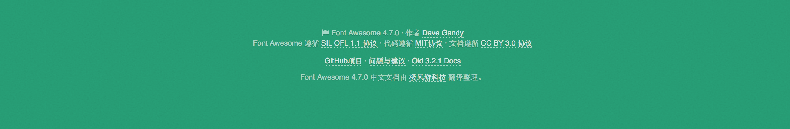

我们经常看到一种网页设计手法，背景宽度满幅，内容宽度固定。例如： 要实现这种设计风格，最常见的方法就是为每个区块准备两层元素：外层用来实现满幅的背景，内层用来实现定宽的内容。 举例来说，页脚：
<footer>
<div class="wrapper">
<!--页脚内容-->
</div>
</footer>
同时css来设置这两层元素的样式：
footer {
background: #269C74;
}
.wrapper {
max-width:600px;
margin:1em auto;
}

有没有其他的办法，可以不用添加一层额外的元素呢？
首先，margin：auto；在这个场景下发挥了什么作用？这条声明所产生的左右边距实际上都等于视口宽度的一半减去内容宽度的一半。由于半分比在这里是基于视口宽度来解析的，我们可以把这个外边距的值表达为 50% - 300px;实际上我们可以用 calc()函数，它允许我们在css中直接以这种简单的算式来指定属性的值。如果用calc() 取代原先的auto，这个内层容器的样式就会变成：
.wrapper {
max-width:600px;
margin:1em calc(50% - 300px);
}
之所以要在页脚内加一层容器元素，唯一的原因就是为了给它的 margin 指定auto 关键字，从而实现内容的水平居中布局。不过现在可以被 calc（）取代了。我们还可以把这个长度值应用到父元素的padding上，而整个效果是保持不变的。
footer {
max-width:600px;
padding:1em calc(50% - 300px);
background:#269C74;
}
其实，如果把width 这一行删掉，也没有影响。这时为什么呢？
因为当内边距是padding:1em calc(50% - 300px);时，只能给内容留出600px（2x300px）的可用空间。只有把容器的 width 属性指定了 600px 之外（或大或小）的其他值，才能看出区别。由于我们想要的内容宽度本来就是600px，这一行声明其实就是可以去掉了。
我们还可以为它增加一条回退样式来增强向后兼容性。这样即使浏览器不支持calc() ，我们至少可以得到一个相对合理的内边距。
footer {
padding:1em;
padding:1em calc(50% - 300px);
background:#269C74;
}
终于，可以抛弃冗余的的标签了。